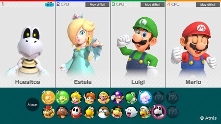

| Tipo | Descripción: Mario Party es una serie de videojuegos en los que cuatro personajes del universo de Mario, controlados por personas o por la consola, compiten en un juego de tablero, utilizando dados para moverse en casillas y participando en múltiples minijuegos. |
|---|---|
| Restricciones de Edad | Edad Minima 6 años |
| Tipo de Juego | Minijuegos y Fiesta |
| Dispositivos | Switch, Wii U, Nintendo 3DS, NDS, Wii, Game Boy Advance, GameCube y Nintendo 64 |
| Precio | 59,99€ |
| Links de Compra | Compra |
| Personaje |  |